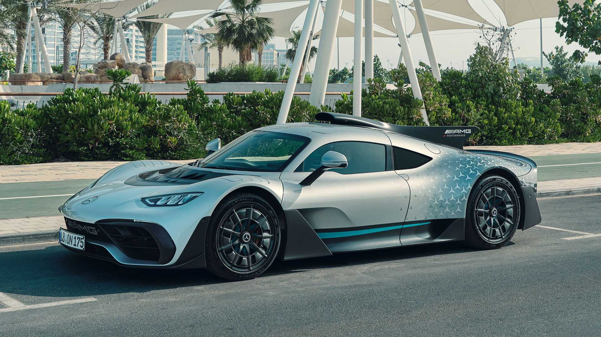

Mercedes-Benz 300 SLR Uhlenhaut Coupé
Com mais de 1.000 cv e velocidade máxima acima de 300 km/h, o Mercedes-AMG ONE será o primeiro veículo de passeio da história a disponibilizar o motor híbrido da Fórmula 1. O hipercarro, como é chamado, tem passado por intensos testes de pista e laboratórios e figura entre os maiores destaques da Mercedes-Benz nos últimos anos. O modelo é impulsionado por uma unidade inteligente composta por um motor V6 turbo, capaz de atingir 11 mil rpm e quatro motores elétricos que giram a até 50 mil rpm. O veículo tem tração integral permanente e o eixo dianteiro tem propulsão totalmente elétrica. O design é totalmente funcional e inclui elementos aerodinâmicos ativos. No interior, o destaque é o volante semelhante ao usado na Fórmula 1, que permite ajustes no modo de condução e suspensão, além de mostrar a marcha em uso em sua área superior. O Mercedes-AMG ONE, que é uma edição limitada a 275 veículos, já teve todas as suas unidades vendidas dois anos antes da entrega, contando com três clientes brasileiros.
Mercedes-Benz Maybach Exelero
Maybach Exelero é um coupé superluxuoso da Maybach, sendo atualmente um dos automóveis mais caros do mundo, com um preço de US$ 8 milhões.[1] Apresentado pela primeira vez em Berlim no ano de 2005, o Maybach Exelero chega a uma velocidade equivalente a 350km/h, e vai de 0 a 100 km em 4,4 segundos. Possui um motor V12 twin-turbo de 700 hp e 5,89 m de comprimento e 2.660 kg.